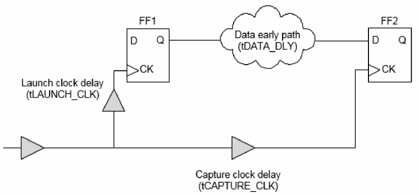
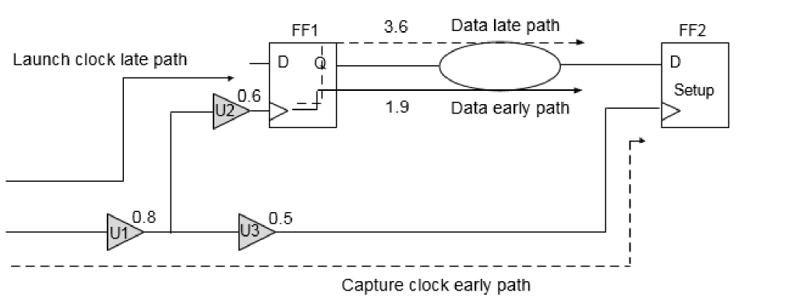
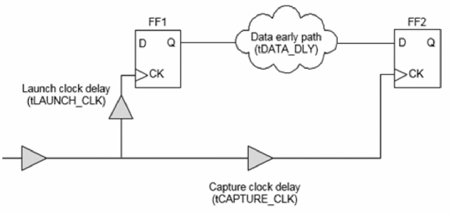
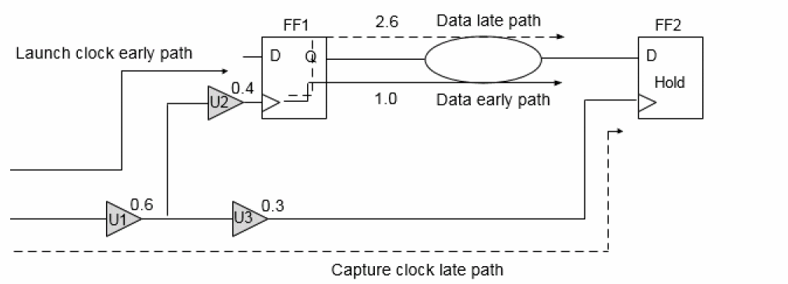
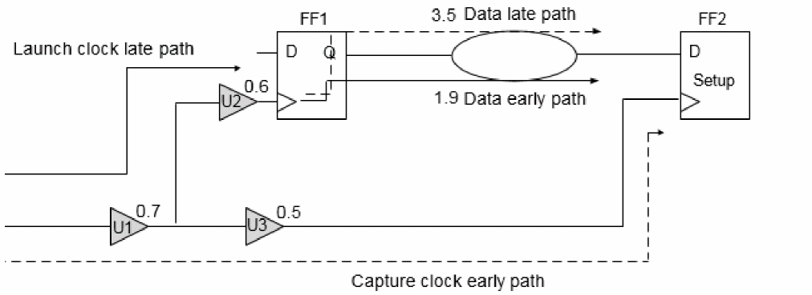
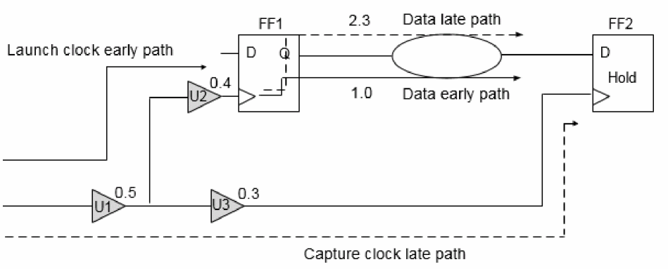
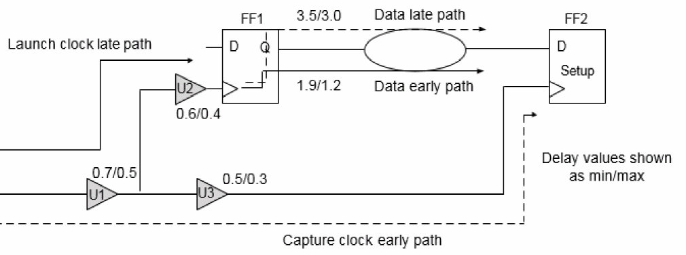
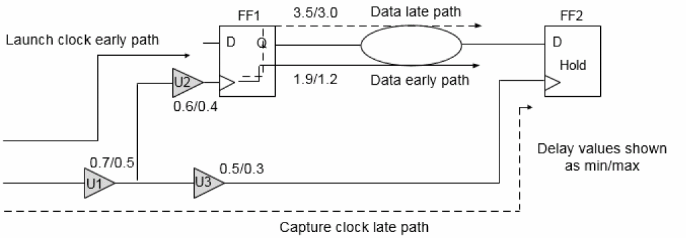

Specifying Timing Analysis Mode Types
The timing analysis mode types are:
- Single Timing Analysis Type Overview
- Best-Case Worst-Case (BC-WC) Timing Analysis Mode Overview
- On-Chip Variation (OCV) Timing Analysis Mode Type Overview
Single Timing Analysis Type Overview
In this mode, the Tempus software uses a single set of delays (using one library group) based on one set of process, temperature, and voltage conditions.
To set the timing analysis mode as single, you can use the following command:
set_db timing_analysis_type single
In single analysis mode, only maximum delay values are used for delay calculation. The -max options of commands in constraints are used for both minimum and maximum analysis in single analysis mode. For example, the set_annotated_delay –max 10 command will be used for both minimum and maximum analysis.
Even with single library group, cell delay can have variation in maximum delay based on sdf_cond, timing derates, and other inputs. In single analysis mode, early and late path delays are the minimum and maximum, respectively, of this range of maximum delay.
Single Timing Analysis - Setup and Hold Checks
These are explained in the sections below.
Setup Check in Single Timing Analysis Mode
For setup check, the software checks the late launch clock and late data paths against early capture clock path.
Figure -58 Setup Check in Single Timing Analysis Mode

For zero slack value in a setup check, the following condition should be met:
launch clock late path (tLAUNCH_CLK) + data clock late path (tDATA_DLY) <= capture clock early path (tCAPTUE_CLK) + clock period - setup
Figure 4-59 shows the setup check on a path from FF1 to FF2.
Figure -59 Setup Check in Single Timing Analysis Mode

The software uses a library to calculate the maximum delay. For setup check, the software considers two paths between the two registers, FF1 and FF2 - the late path delay is used to calculate slack during setup check.
The following values are assumed in this example:
Clock period = 4; Clock source latency = none; Clock mode = Propagated
Hold Check in Single Timing Analysis Mode
For hold check the software compares the early arriving data against the late arriving clock at the endpoint.
Figure -60 Hold Check in Single Timing Analysis Mode

For zero slack value in a hold check, the following condition should be met:
launch clock early path (tLAUNCH_CLK) + data early path (tDATA_DLY) => capture clock late path (tCAPTUE_CLK) + hold
The following example shows the hold check on a path from FF1 to FF2.
Figure -61 Hold Check in Single Timing Analysis Mode

The following values are assumed in this example:
Clock period = 4; Clock source latency = none; Clock mode = Propagated
Performing Timing Analysis in Single Analysis Mode
To perform timing analysis in single analysis mode, you need to perform the following steps:
-
Set the analysis mode to single, setup and propagated clock mode:
set_db timing_analysis_type
singletiming_analysis_check_typesetup -
Generate the timing reports for setup:
report_timing
-
Set the analysis mode to hold:
set_db timing_analysis_check_type hold -
Generate the timing reports for hold analysis:
report_timing
Alternatively, you can use the report_timing –early command with the set_db timing_analysis_check_type setup attribute to report hold paths.
Best-Case Worst-Case (BC-WC) Timing Analysis Mode Overview
In best-case worst-case (BC-WC) analysis mode, the software uses delays from the maximum library group for all the paths during setup checks and minimum library group for all the paths during hold checks. In this mode, the Tempus software considers two operating conditions and checks both operating conditions in one timing analysis run. To set the timing analysis mode as BC-WC, you can use the following command:
set_db timing_analysis_type best_case_worst_case
You can use the set_clock_latency constraint to set the source latency for a clock in both ideal and propagated mode for setup and hold checks. You can also use this constraint to set the network latency for an ideal clock. The specified source or network latency affects the early and late clock paths for both capture and launch clocks for both minimum and maximum operating conditions.
Note
: The software considers the network latency, specified using the set_clock_latency -max (or -min) command, for ideal clocks only. In propagated mode, actual clock propagated latency values will be used.
BC-WC Timing Analysis Mode - Setup and Hold Checks
These are explained in the sections below.
For setup check, the software calculates delay values from the maximum library group for data arrival time, and network delay of both launch and capture clocks (in propagated mode).
The source latency in both ideal and propagated modes for setup checks is defined in the constraints used by various clock paths as follows:
| Clock Path (Operating Condition) | Constraint Used |
The network latency in ideal mode for setup checks is defined in the constraints used by various clock paths as follows:
| Clock Path (Operating Condition) | Constraint Used |
The following example shows the setup check on a path from FF1 to FF2.
Figure -62 Setup Check in BC-WC Timing Analysis Mode

The software uses the max library to scale all delays at WC conditions. The following values are assumed in this example:
Clock period = 4; Clock source latency = none ; Clock mode = Propagated
For hold check, the software uses the delay values from the min library for the data arrival time, and network delay of both launch and capture clocks (in propagated mode).
The source latency in both ideal and propagated modes for hold checks is defined in the constraints used by various clock paths as follows:
| Clock Path (Operating Condition) | Constraint Used |
The network latency in ideal mode for hold checks is defined in the constraints used by various clock paths as follows:
| Clock Path (Operating Condition) | Constraint Used |
The following example shows the hold check on a path from FF1 to FF2.
Figure -63 Hold Check in BC-WC Timing Analysis Mode

The software uses the min library to scale all delays at BC conditions.
The following values are assumed in this example:
Clock period = 4; Clock source latency = none; Clock mode = Propagated
Performing Timing Analysis in BC-WC Analysis Mode
To perform timing analysis in BC-WC analysis mode, complete the following steps:
-
Set the analysis mode to BC-WC:
set_db timing_analysis_type
best_case_worst_casetiming_analysis_check_typesetup -
Generate the timing reports for setup:
report_timing
-
Set the analysis mode to hold and propagated clock mode:
set_db timing_analysis_check_type hold -
Generate the timing reports for hold:
report_timing
Alternatively, you can use the report_timing –early command with set_db timing_analysis_check_type setup/hold option to report setup/hold paths.
On-Chip Variation (OCV) Timing Analysis Mode Type Overview
In on-chip variation (OCV) mode, the software calculates clock and data path delays based on minimum and maximum operating conditions for setup analysis and vice-versa for hold analysis. These delays are used together in the analysis of each check.
The OCV is the small difference in the operating parameter value across the chip. Each timing arc in the design can have an early and a late delay to account for the on-chip process, voltage, and temperature variation.
OCV Timing Analysis Mode - Setup and Hold Checks
These are explained in the sections below.
In OCV mode setup check, the software uses the timing delay values from the late library set and operating conditions for the data and the launch clock network delay. The software uses the delay values from the early library set and operating conditions for the capturing clock network delay assuming that the clocks are set in propagated mode.
The source latency in both ideal and propagated modes for setup checks is defined in the constraints used by various clock paths as follows:
|
set_clock_latency |
|
The network latency in ideal mode for setup checks is defined in the constraints used by various clock paths as follows:
The following example shows the setup check on a path from FF1 to FF2.
Figure -64 Setup Check in OCV Mode

The software uses the max library for all late path delays and min library for all early path delays.
The following values are assumed in this example:
Clock period = 4; Clock source latency = none; Clock mode = Propagated
For OCV hold check, the software uses the timing delay values from the early library set and operating conditions for the data arrival time and launch clock network delay. The software uses delay values from the late library set and operating conditions for the capturing clock network delay assuming that the clocks are set in propagated mode.
The source latency in both ideal and propagated modes for hold checks is defined in the constraints used by various clock paths as follows:
|
set_clock_latency |
|
The network latency in ideal mode for hold checks is defined in the constraints used by various clock paths as follows:
The following example shows the hold check on the path from FF1 to FF2.
Figure -65 Hold Check in OCV Mode

The software uses the max library to scale all delays at WC conditions and minimum library to scale all delays at BC conditions.
The following values are assumed in this example:
Clock period = 4; Clock source latency = none; Clock mode = Propagated
Performing Timing Analysis in OCV Mode
To perform timing analysis in OCV mode, complete the following steps:
-
Set the analysis mode to OCV and propagated clock mode:
set_db timing_analysis_type
ocv -
Generate the timing reports for setup:
report_timing
-late -
Generate the timing reports for hold:
report_timing-early
Using Timing Derates in OCV Analysis Mode
When the set_timing_derate command is used, the following paths in OCV mode are affected:
| Violations | Data | Launch Clock | Capture Clock |
Return to top